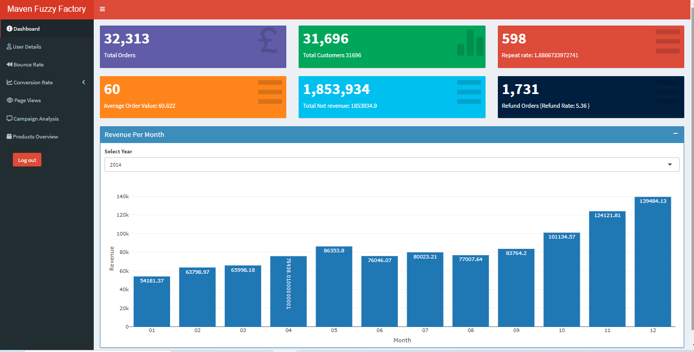
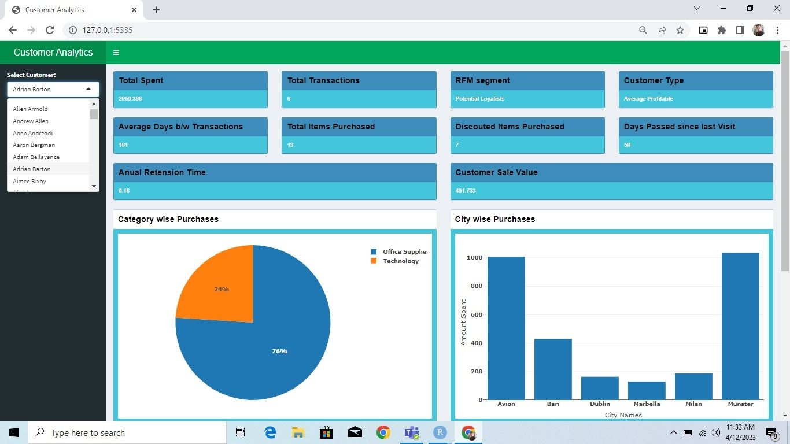
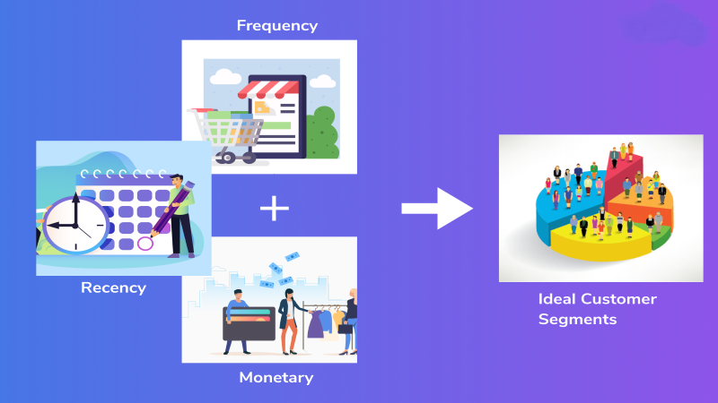

The project includes user authentication, website performance analysis, product insights, and metrics related to customer and products. Key metrics utilized are bounce rate, conversion rate, and various customer and product-related metrics.
Note: write user name and password: wahab


The project involve analyzing customer data from multiple sources to identify key trends and patterns. I used statistical analysis and data visualization techniques to uncover hidden insights.

RFM Model is one of the ways for customer segmentation. Used to analyze which customers are profitable in order to retain these customers and maximize their ROI (Return on investment).